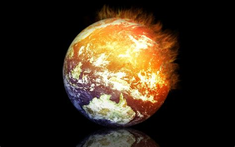

También llamados forzamientos externos, son los mecanismos dominantes externos al sistema climático —pero no necesariamente externos a la Tierra— que causan el calentamiento global observado en el registro de temperaturas.
Las investigaciones se han centrado en las causas del calentamiento observado desde 1979, período en el que la actividad humana ha tenido un crecimiento más rápido y se han podido realizar mediciones satelitales sobre la alta atmósfera.
Las principales causas antropogénicas del calentamiento global son el incremento de las concentraciones atmosféricas de gases de efecto invernadero, los cambios globales en el paisaje y el uso de tierras (como la deforestación) y el incremento de las concentraciones atmosféricas de aerosoles y hollín. Las principales causas no antropogénicas son las variaciones en la luminosidad solar, las erupciones volcánicas y las variaciones orbitales de la Tierra alrededor del Sol.
La «detección» es el proceso de demostrar que el clima ha cambiado en cierto sentido estadístico definido, sin proporcionar una razón para ese cambio. La detección no implica la atribución del cambio detectado a una causa particular. La «atribución» de las causas del cambio climático es el proceso de establecer las causas más probables para el cambio detectado con un cierto nivel de confianza definido. La detección y atribución también se pueden aplicar a cambios observados en los sistemas físicos, ecológicos y sociales. La atribución del calentamiento global a la actividad humana se basa que los cambios observados no son consistentes con la variabilidad natural, las causas naturales (no antropogénicas) conocidas tienen un efecto de enfriamiento en este período, y los patrones de cambio en las causas antropogénicas conocidas son coherentes con los cambios observados en el clima.
Causas antropogénicas
Causas no antropogénicas